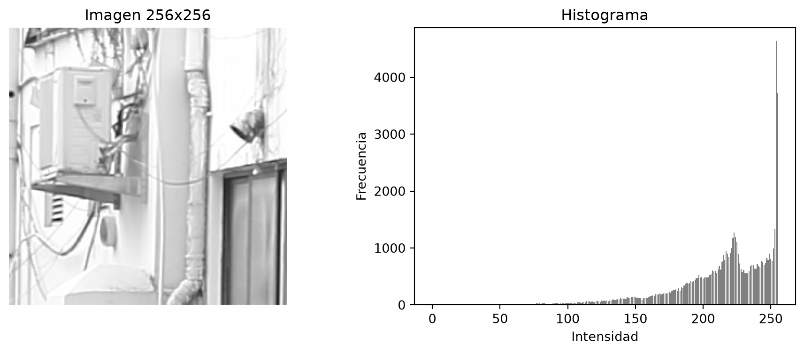
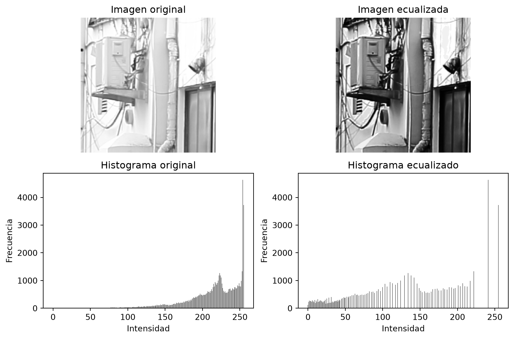

Cada canal varía de 0 a 255, permitiendo representar millones de colores.
Es el modelo usado en pantallas, cámaras y procesamiento digital de imágenes.
7 Visualización de valores en escala de grises
import cv2import matplotlib.pyplot as pltimport numpy as np# Cargar imagen en escala de grisesimg = cv2.imread("imagenes/frutas.jpg", cv2.IMREAD_GRAYSCALE)# Seleccionar una sección pequeña (ej. 10x10 píxeles desde la esquina superior izquierda)patch = img[0:10, 0:10]# Mostrar la sección ampliada como imagenplt.figure(figsize=(3,3))plt.imshow(patch, cmap='gray', vmin=0, vmax=255)plt.title("Sección 10x10 en escala de grises")plt.axis('off')plt.show()# Convertir la matriz a stringmatriz_str = np.array2string(patch, max_line_width=80)# Mostrar en formato markdown con letra pequeñafrom IPython.display import display, Markdowndisplay(Markdown(f"<pre style='font-size:15px'>{matriz_str}</pre>"))
El histograma es la frecuencia de aparición de intensidades.
Formalmente:
\[
h(r_k) = n_k
\]
donde \(r_k\) es un nivel de gris y \(n_k\) el número de píxeles con ese valor.
8.1 Código: Construcción del histograma
import cv2import numpy as npimport matplotlib.pyplot as plt# Cargar imagen en escala de grisesimg = cv2.imread( "imagenes/DPP0357.TIF", cv2.IMREAD_GRAYSCALE)crop = img[:256, :256]# Calcular histograma con OpenCVhist = cv2.calcHist([crop], [0], None, [256], [0,256])# Crear una figura con dos subplots lado a ladoplt.figure(figsize=(12,4))plt.subplot(1,2,1)plt.imshow(crop, cmap='gray')plt.title("Imagen 256x256")plt.axis('off')plt.subplot(1,2,2) plt.bar(np.arange(256), hist.flatten(), color='gray')plt.title("Histograma")plt.xlabel("Intensidad")plt.ylabel("Frecuencia")plt.show()

9 Ecualización de histograma
Busca redistribuir los niveles de gris para mejorar el contraste.
Función de transformación acumulativa:
\[
s_k = (L-1)\sum_{j=0}^k \frac{n_j}{MN}
\]
donde:
- \(L\) = número de niveles (256 en 8 bits).
- \(M \times N\) = número total de píxeles.
10 Ejemplo de ecualización de histograma
Consideremos una imagen de
\[M \times N = 8\]
píxeles, con intensidades de 3 bits
(\(L = 8\) niveles, de 0 a 7):
\[
I = [3, 3, 4, 5, 6, 6, 6, 7]
\]
Histograma de frecuencias
Intensidad (\(r_k\))
Frecuencia (\(n_k\))
0
0
1
0
2
0
3
2
4
1
5
1
6
3
7
1
10.1 2. Probabilidades y acumuladas
Probabilidad: \(p(r_k) = n_k / 8\)
\(r_k\)
\(p(r_k)\)
CDF \(\sum_{j=0}^k p(r_j)\)
3
0.25
0.25
4
0.125
0.375
5
0.125
0.500
6
0.375
0.875
7
0.125
1.000
10.2 3. Nueva asignación de intensidades
\[
s_k = (L-1)\sum_{j=0}^k p(r_j)
\]
Con \(L-1 = 7\):
\(r_k\)
CDF
\(s_k\)
3
0.25
\(7 \cdot 0.25 = 1.75 \approx 2\)
4
0.375
\(7 \cdot 0.375 = 2.63 \approx 3\)
5
0.50
\(7 \cdot 0.50 = 3.50 \approx 4\)
6
0.875
\(7 \cdot 0.875 = 6.13 \approx 6\)
7
1.00
\(7 \cdot 1.00 = 7.00\)
10.3 4. Imagen ecualizada
Imagen original: \[
[3, 3, 4, 5, 6, 6, 6, 7]
\]
Imagen ecualizada: \[
[2, 2, 3, 4, 6, 6, 6, 7]
\]
Conclusión: La ecualización redistribuyó los valores, extendiendo mejor el contraste entre 2 y 7.
10.4 Código: Ecualización con OpenCV
# Ecualización de histogramaeq = cv2.equalizeHist(crop)# Calcular histogramashist_orig = cv2.calcHist([crop], [0], None, [256], [0,256])hist_eq = cv2.calcHist([eq], [0], None, [256], [0,256])# Mostrar comparaciónplt.figure(figsize=(9,6))# Imagen original y su histogramaplt.subplot(2,2,1)plt.imshow(crop, cmap='gray')plt.title("Imagen original")plt.axis('off')plt.subplot(2,2,3)plt.bar(np.arange(256), hist_orig.flatten(), color='gray')plt.title("Histograma original")plt.xlabel("Intensidad")plt.ylabel("Frecuencia")# Imagen ecualizada y su histogramaplt.subplot(2,2,2)plt.imshow(eq, cmap='gray')plt.title("Imagen ecualizada")plt.axis('off')plt.subplot(2,2,4)plt.bar(np.arange(256), hist_eq.flatten(), color='gray')plt.title("Histograma ecualizado")plt.xlabel("Intensidad")plt.ylabel("Frecuencia")plt.tight_layout()plt.show()

11 Convolución en imágenes
La convolución es la operación matemática que permite aplicar un kernel o máscara sobre una imagen.
Cada píxel resultante se obtiene como combinación ponderada de sus vecinos: